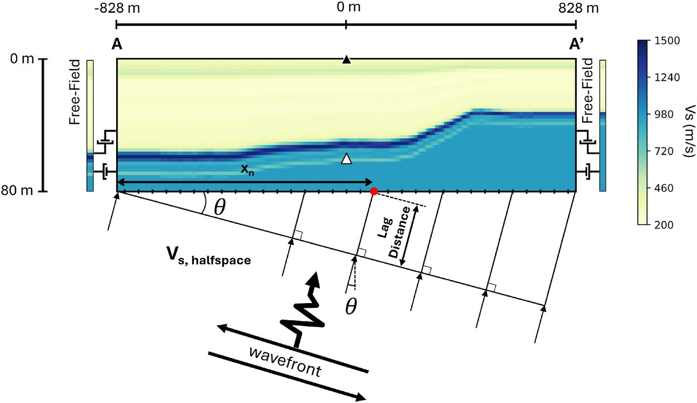

Multi-dimensional site response
I develop large-scale 2D and 3D numerical site response models at downhole array sites, where earthquakes are recorded both at the surface and at depth. These recordings let us test model predictions directly against what the ground actually did.
Recent work examines how the inclination and azimuth of incoming waves change the predicted response, and how much 3D subsurface variability matters compared with 1D analyses.